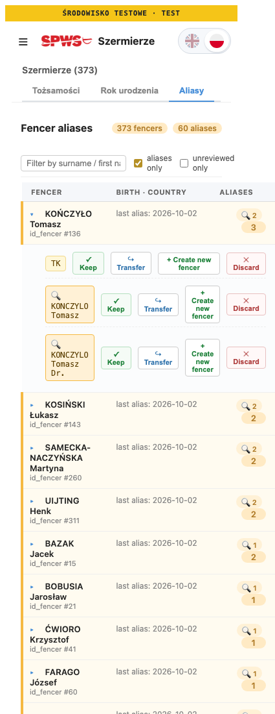
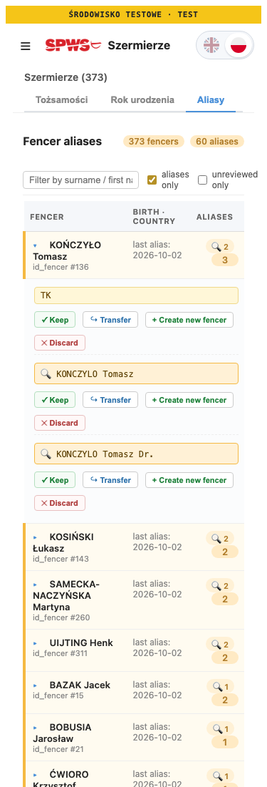
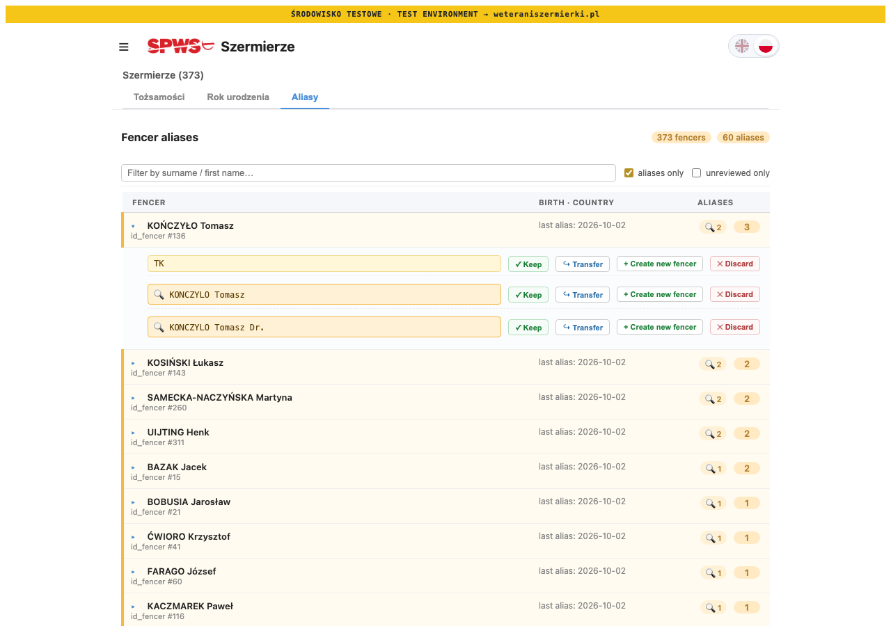

W2 · after “go ahead” · 25 Oct 2026
The twelve commits, a fix their push turned up, E1, P6 and P5 are on main, each test-first with the whole preflight green. Two releases wait for your PROD approval. T2 is built and measured but not pushed: a screen change goes out only after you approve its before and after. Running the new parity check for real turned up wrong data in closed events; that and four other findings are questions below.
§ 1 · on main
| Main | What | Release | Verified |
|---|---|---|---|
e824372d | The twelve commits and the sign-off sheet (S1 A) | 40143510756 success | The gate failed open once, as predicted. Both deploy jobs checked out e824372d; CERT and PROD fingerprints f778e575…; commit-tracking.sh pushed on attempt 1 both times; the manifest describes this release (it described March’s). The live bundle carries both #9 texts. |
075aa3b2 | The push showed GitHub refusing evf-sync.yml (run 40143394493): a comment inside its script held an empty ${{ }}, and GitHub evaluates expressions in comments too. The daily EVF sync would not have started. Fixed with WFEXPR.01, which checks every value of every workflow. | 40144164514 success | The gate measured from e824372d and named only the workflow and its test. No failed run on later pushes. |
c3a8982c | E1: a CERT export is seed_cert_<date>.sql and never moves seed_prod_latest.sql (SEEDNAME.01–04; ADR-036 amendment) | 40145204599 success | Deploys and fingerprints as above. Not run live: a CERT export commits a file to main, so it runs only when you start one. |
24779589 | P6: a scheduled start-list capture works on the Warsaw date it was due (PZSZ.SL.10–12; ADR-116 amendment). ADR-116’s status still said “not yet released”; corrected. | 40146148809 | CERT deployed; PROD waits for your approval. The next scheduled capture is the first live run. |
4b1699a5 | P5: the parity sweep reads EVF’s results API, compares N and points, reports on Telegram and writes nothing (EVFCHK.01–07; ADR-053 amendment) | 40148293688 | Queued behind the P6 release; it needs your approval after that one. Run on LOCAL against EVF’s live API: see § 3. |
One deviation from the P5 wording you approved: EVF’s results are read with compare_evf_points.read_evf, not scrape_event_results. Both use the same EVF API client; read_evf also carries each competition’s field size, which a check of N needs.
§ 2 · T2 · approve before it goes out
The table kept its desktop column widths (200 px and 90 px, 14 px padding) on a phone, so it grew to 393 px inside a 375 px screen. A rule for screens up to 600 px lets those two columns shrink, narrows the cell padding to 8 px, and puts an expanded alias on its own line with its four buttons below. LAYOUT.02 pins the rule and that the desktop rules stay as they are, as LAYOUT.01 does for the event list. Measured on LOCAL with the first fencer expanded: 425 → 375 px, nothing past the edge.



| Capture, LOCAL | Before | After | Changed pixels |
|---|---|---|---|
| Aliases, 1280 px | 1280 × 2641 | 1280 × 2641 | 0 |
| Aliases, 375 px | 425 × 3521 | 375 × 3412 | the change shown above |
| Events, 1280 px | 1280 × 2157 | 1280 × 2157 | 0 |
| Events, 375 px | 375 × 4829 | 375 × 4829 | 0 |
§ 3 · P5’s first real run
On LOCAL (PROD’s data) with a 400-day reach, against EVF’s live results API, reading only: 33 events, 10 match EVF, 3 differ, 20 hold no results yet.
| Event | What differs (ours — EVF’s) |
|---|---|
| PEW4efs-2025-2026 | 19 of 28 match. Six results short on N (by one; by two for KORONA’s épée), so slightly fewer points: KUZMICHOVA women’s épée V2 3/48, 87.00 — 3/49, 87.15; KORONA men’s épée V2 5/77 — 5/79 (two short). Three results EVF does not list at that place: STAŃCZYK and GANSZCZYK (women’s épée V2, 17th and 27th of 48), PARDUS (men’s épée V2, 56th of 77). |
| PEW9efs-2025-2026 | 14 of 16 match. KORONA and ALCSER, men’s épée V1: N 11 — 12, points 54.22 — 55.20 and 20.24 — 21.63. |
| PEW10efs-2025-2026 | 18 of 19 match. KORONA men’s foil V2, 29th: N 32 — 33, points 2.39 — 12.81, a gap one fencer of N does not explain. |
Not a difference of definition: EVF lists all 49 women’s épée V2 fencers of that event with a place (1–49), so its N counts placed fencers, as ours should. One placed fencer is missing from our count. These are closed 2025/26 events, so nothing was changed. The daily run looks back 60 days, so it will not report them; on PROD the first event it compares will be PEW2efs (ends 1 November), once its results are on PROD.
§ 4 · decide this
Answer like T2 A, D1 A, N1 A, N2 A, R1 A, C1 A. Each A is built test-first in its own commit, and each goes out as its own release.
| # | Question | Options | Rec. |
|---|---|---|---|
| T2 | The Aliases phone layout in § 2 | A approved: push and release it (one more PROD approval) B changes first (say which) | A |
| D1 | The closed-event differences in § 3 | A a read-only report of every difference in every closed EVF event (PROD, CERT and EVF read; nothing written), then a decision per event B leave closed seasons as they are | A |
| N1 | Every CI and Release run warns that supabase/setup-cli@v1 targets Node.js 20, which GitHub has deprecated and already overrides with Node 24. v2 and v3 run without Node. The pinned CLI 2.116.0 stays either way. ci.yml says a change to what boots the stack is tested on a PR, never straight on main. | A v1 → v3.0.1 in all four places, tested on a pull request first, then released B v1 → v2.1.2, the same way C leave the warning | A |
| N2 | Every run notes that ubuntu-latest moves to Ubuntu 26 from 19 October; today’s runs are still on ubuntu-24.04. The move happens without notice, mid-release if it falls that way. | A name ubuntu-24.04 in every job now, and move to 26.04 deliberately later, on a pull requestB leave ubuntu-latest | A |
| R1 | The interactive review CLI, when an operator commits an event read from EVF’s API, still overwrites its scores with EVF’s and sets EVF_PUBLISHED (commit_lifecycle, ADR-053). The batch ingest never reaches that path. On CERT it would leave scores promote’s replay does not produce, and ADR-113 §8 says results have no other writer. | A make it report like the daily check, writing nothing B keep it, and record it in ADR-113 as the one exception | A |
| C1 | On CERT and PROD, PEW8es-2025-2026 (ended 3 May) and PEW9efs-2025-2026 (31 May) are still IN_PROGRESS, and DMEW-2025-2026 (14 May, never scraped by design) is still PLANNED. The daily close takes only the active season’s events, so nothing will ever close them. | A set each to COMPLETED by hand on CERT then PROD, after a read-only check, each on your word by name (or “accept all”) B leave them | A |
§ 5 · your steps
scripts/gas_telegram_bot.js into the Apps Script project, so the bot’s plain-text retry takes effect.refs/pull/*; reset other local checkouts to origin before working in them.w2-follow-up-2026-10-25 · 25 Oct 2026 · branch claude/ftl-seed-email-removal · T2 built on the branch, not pushed · § 3 read with python/pipeline/evf_parity_sweep.py against LOCAL and EVF’s public results API · § 4 C1 read with scripts/cloud-sql.sh, SELECT only